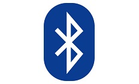

Web Bluetooth Demo
This page demonstrates the Web bluetooth, follow below steps to use the demo:
- Check the verbose box if you want debug output.
- The default advertising filter is 'TYSC-'. Enter a full BLE friendly name if you want to restrict the filtering to a single BLE Device.
- Enter Data which you want to send to Peripheral Device.
- Click on the Connect button.
A BLE connection will be established to the BLE peripheral device and the response will be show in the Command/Response section below.
The BLE connection will be dropped after the response is received.
- This demo works without any glitches in Chrome Browser - in MAC and Android OS(v6 onwards).
For Windows OS System - Canary version of the Chrom Browser supports this and in order to support this on a Chrome browser v68 and v69 refer the following link:
click here
Other Browser Status w.r.to Web Bluetooth can be found here
On the iOS Platform there is one WebApp which demos this refer here
- Repeat.
Command/Response Output